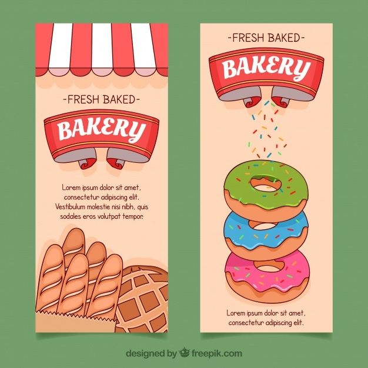

ABOUT
Di toko roti harum aroma tercipta,
Roti segar menggoda selera,
Manis dan gurih, jadi pilihan setia,
Di sini, nikmati sajian dari hati.
Toko roti PUTRA SEKAWAN juga mempunyai berbagai macam-macam roti.
VISI
Menjadi destinasi online utama bagi pecinta roti dan kue, dengan menyediakan produk-produk roti berkualitas tinggi, pelayanan pelanggan yang unggul, dan pengalaman belanja yang mudah dan menyenangkan.
MISI
Teknik Komputer dan Jaringan, mempunyai misi untuk :
- Produk Berkualitas: Menawarkan berbagai pilihan roti dan kue yang dibuat dari bahan-bahan terbaik dengan teknik pembuatan yang tradisional dan inovatif.
- Pelayanan Pelanggan: Memberikan layanan pelanggan yang responsif dan ramah, memastikan setiap pelanggan merasa dihargai dan puas dengan pembelian mereka.
- Pengalaman Belanja: Menciptakan pengalaman belanja online yang intuitif, cepat, dan aman, memungkinkan pelanggan untuk dengan mudah menemukan, memesan, dan menerima produk kami.
- Komunitas: Membangun komunitas pelanggan yang loyal dan terlibat melalui konten informatif, resep, dan acara khusus yang menginspirasi dan mengedukasi.
- Keberlanjutan: Mengadopsi praktik bisnis yang ramah lingkungan dan berkelanjutan untuk menjaga bumi bagi generasi mendatang.
NILAI-NIALAI
Membekali peserta didik dengan keterampilan, pengetahuan, dan sikap agar :
- Kualitas: Komitmen terhadap kualitas produk dan pelayanan.
- Integritas: Kejujuran dan transparansi dalam semua aspek bisnis.
- Inovasi: Terus berinovasi dalam produk dan layanan.
- Keberlanjutan: Peduli terhadap lingkungan dan masyarakat.
- Kepuasan Pelanggan: Fokus pada kepuasan dan kebahagiaan pelanggan.